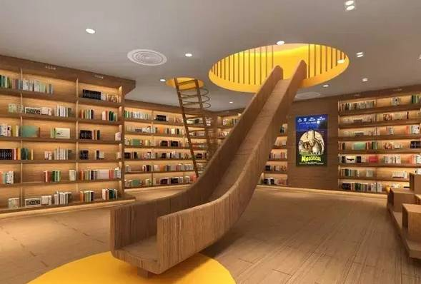

产品核心
电商步步紧逼之下，实体商业已进入主题化、特色化的体验经济时代。以往百货、超市、电影院是购物中心的三大件，但这种组合已经被打破。咖啡馆+服饰、零食店+服饰等各种“百货+”的新型模式如百花齐放，争相斗艳。
一时间，全国各大商场内原创设计师品牌以及生活类、文化创意类产品蜂拥而至，其中以方所、诚品书店、西西弗书店、言几又等为代表的主题集合书店在商业地产界掀起了一场文化空间的热潮，这类产品强大的文化体验性是电商无法撼动的，对年轻白领阶层有很强的吸引力。
在消费市场更为成熟的日韩、欧美等国家，这种文化集合店已非常普遍，以日本为例，早已占据购物中心一半的比例，是吸引客源的主力店铺。而在中国，这股势头也在各大城市蔓延，招揽这样的人气大咖进场已经成为了商场招商人员不懈的追求。
这种商品有情怀、重设计、高品质，并且能植入本地文化，具备独特的产品造型形式，可爱、可人、实用，有匠心精神，因此将得到市场热捧。
成功案例
一、言几又书店

一个新兴品牌的成长需要经过一段痛苦而漫长的时间磨砺，文化性的集合品牌由于特殊的属性更需要下尽一番功夫。就拿“言几又”来说，2006年成立于四川的成都，当时就是一家面积只有一百多平方米的民营实体书店，经过了十个年头的三次迭代升级，已经成长成为一家文化属性极强的文化集合书店。
言几又最早扎根各种中高端的社区，把社区作为快速消费品，便捷高效传播到消费者的身边。对于这种文化业态来说，不是刚需业态，顾客需要进行简单的筛选和过滤，才能形成有效客流。因此，从2010年开始，言几又便开始了多次升级创新。
众所周知，传统单纯的零售有一定的局限性，于是开始结合一些高附加值的板块，但在实施过程中发现这样的业态很多，当然，作为一家书店必须要找到与之相关联的业态，那就是文具。运营一段时间后，几个主创人员发现，即便文具的形式很多，但仍然不能带来更多的消费，于是又加入了咖啡馆。跟其他业态不同，咖啡馆可以营造一个阅读环境，附带其他饮品作为整个业态盈利的补充，至此，言几又从单一业态变成复合型的零售业态。
通过此次升级后，业态结构基本上满足了顾客群体对文化消费的需求，但是几个不同的业态融合在一起仍缺少核心，只有有了核心才有更大的延展空间。
二、西西弗
在物质发达的当下，对消费需求而言，已经到达了“社交需求、尊重需求和自我实现需求”阶段。其中，尤为重要的是“自我实现需要”，所以现代人愿意将人群属性标签化，应运而生的便是“文艺青年”、“小资”、“土豪”等。无论是商品还是场所都会迎合这种需求，给予人群标签的心理暗示。作为“文创”商业就有着易制造标签属性，与目标客群在“价值观”上形成共鸣。
吴清友曾说过，“没有商业诚品不能活，没有文化诚品不想活。”台湾诚品书店的华丽转身，将单一的书店转化为业态复合的“诚品生活”，从此“诚品”不再是售卖图书的书店品牌，而成为一种文化生活方式的标签。无独有偶，例外服装品牌又创造了“方所”，他们给自己的定义是：“方所是一群懂生活的人喜欢聚集的场所，要为懂得文化创意生活的所有人提供中国未来可能的美学生活方式。”方所在广州太古汇的店，两年就实现了盈利。
 此外，在以文化为灵魂的基础上，一部分书店也衍生出了不同业态、不同品牌。这不仅提高书店“造血”功能，还拓展书店文化长远发展空间。
此外，在以文化为灵魂的基础上，一部分书店也衍生出了不同业态、不同品牌。这不仅提高书店“造血”功能，还拓展书店文化长远发展空间。
西西弗书店从1993年诞生至今，已长成一棵支系繁密的大树——经过二十多年的发展，已经拥有Park书店、矢量咖啡、“不二生活”创意空间、“7&12阅听课”儿童阅读体验空间、推石文化和《唏嘘》杂志六个子品牌。即便如此，西西弗分支子品牌的形成，也并不代表西西弗也走向了跨界的道路。
西西弗始终以文化领域为主，而这些子品牌是文化衍生品，包括创立矢量咖啡是为了建造舒适的阅读环境。西西弗未来不仅会在出版领域和设计领域里有所展示，还会深入社区举办书展。这与跨界不同领域的品牌不同，西西弗把“文化”刻在了根里。
关于我们
本团队...目前暂时就一个人，所以期待您的加入~